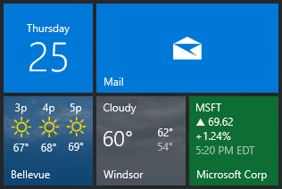

Pin secondary tiles from desktop apps
A desktop app such as a WinUI 3 app (using the Windows App SDK), or a Windows Presentation Foundation (WPF) or Windows Forms (WinForms) app, can pin a secondary tile by using a packaged app (see Building an MSIX package from your code). This was formerly known as Desktop Bridge.

Important
Requires Fall Creators Update: You must target SDK 16299 and be running build 16299 or later to pin secondary tiles from Desktop Bridge apps.
Adding a secondary tile from your Windows App SDK, WPF, or WinForms application is very similar to a pure UWP app. The only difference is that you must specify your main window handle (HWND). This is because when pinning a tile, Windows displays a modal dialog asking the user to confirm whether they would like to pin the tile. If the desktop application doesn't configure the SecondaryTile object with the owner window, then Windows doesn't know where to draw the dialog, and the operation will fail.
Package your app
If you're creating a Windows App SDK application with WinUI 3, you must use a packaged application to pin secondary tiles. There are no extra steps required to package your app if you start with the packaged app template.
If you're using WPF or WinForms, and you haven't packaged your app with the Desktop Bridge, then you'll need to do that before you can use any Windows Runtime APIs (see Building an MSIX package from your code).
Initialize and pin a secondary tile using the IInitializeWithWindow interface
Note
This section is for WinUI 3; and for WPF/WinForms with .NET 6 or later.
In the project file, set the TargetFramework property to a value that gives you access to the Windows Runtime APIs (see .NET 6 and later: Use the Target Framework Moniker option). That includes access to the WinRT.Interop namespace (see Call interop APIs from a .NET app). For example:
<PropertyGroup> <!-- You can also target other versions of the Windows SDK and .NET; for example, "net8.0-windows10.0.19041.0" --> <TargetFramework>net8.0-windows10.0.19041.0</TargetFramework> </PropertyGroup>Initialize a new secondary tile object exactly like you would with a normal UWP app. To learn more about creating and pinning secondary tiles, see Pin secondary tiles.
// Initialize the tile with required arguments var tile = new Windows.UI.StartScreen.SecondaryTile( "myTileId5391", "Display name", "myActivationArgs", new Uri("ms-appx:///Assets/Square150x150Logo.png"), TileSize.Default);Retrieve a window handle, and initialize the secondary tile object with that handle. In the code below,
thisis a reference to the Window object (whether a WinUI 3 window, a WPF window, or a WinForms window). For more info, see Retrieve a window handle (HWND) and Display WinRT UI objects that depend on CoreWindow.var hWnd = WinRT.Interop.WindowNative.GetWindowHandle(this); WinRT.Interop.InitializeWithWindow.Initialize(tile, hWnd);Finally, request to pin the tile as you would in a normal UWP app.
// Pin the tile bool isPinned = await tile.RequestCreateAsync(); // Here, update UI to reflect whether user can now either unpin or pin
Send tile notifications
Important
Requires April 2018 version 17134.81 or later: You must be running build 17134.81 or later to send tile or badge notifications to secondary tiles from Desktop Bridge apps. Before this .81 servicing update, a 0x80070490 Element not found exception would occur when sending tile or badge notifications to secondary tiles from Desktop Bridge apps.
Sending tile or badge notifications is the same as UWP apps. See Send a local tile notification to get started.